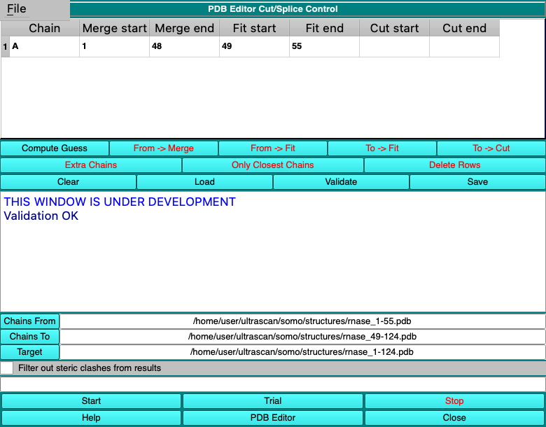
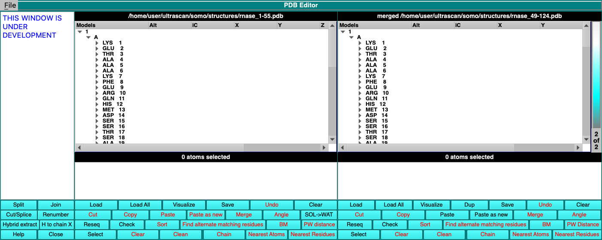
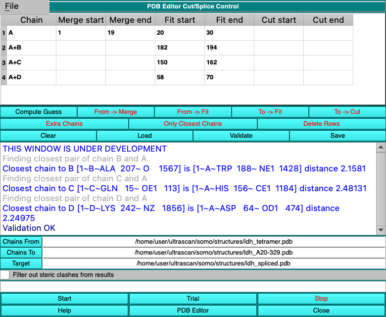

SOMO - PDB Editor Module: Cut/Splice
Last updated: September 2026
Overview
The Cut/Splice tool (window title US-SOMO: PDB Editor Cut/Splice Control) builds a
composite structure by grafting residues taken from one structure onto another. The two structures must share
a short stretch of residues, with the same chain identifier and the same residue numbering. The tool
superimposes the donor on the recipient over that shared stretch, using the Cα atoms, and carries the
grafted residues along with the same rotation and translation, so that they arrive in the frame of the
recipient, attached to it.
Typical uses are:
- completing a structure that lacks terminal residues with those of another model of the same protein,
for example an NMR structure, a homology or AlphaFold model, or a separately built model of the missing
segment;
- joining two structures of overlapping fragments of the same protein;
- replacing a poorly defined terminal segment with the corresponding segment of another model;
- grafting the same segment onto every model of an NMR or simulation ensemble, optionally setting aside
the models in which it collides with the rest of the structure;
- bringing along whole additional chains, for example the other subunits of a complex, placed by the
superposition of a chain the two structures have in common.
The tool is opened with the Cut/Splice button in the left-hand column of the
PDB Editor, which is itself opened with the
PDB Editor button of the main SOMO window. Three files are involved:
- Chains From: the donor structure, from which residues are taken. It is shown in the
center panel of the PDB Editor.
- Chains To: the recipient structure, to which residues are added. It is shown in the
right panel of the PDB Editor.
- Target: the file to which Start writes the result.
The Cut/Splice window works directly on the two PDB Editor panels, so what is done in one window affects the
other; see Working with the PDB Editor.
Contents
How a splice is described
A splice is described in the table at the top of the window, one row per chain, with three residue ranges:
- Merge start - Merge end: the residues of the Chains From chain
to be added to the Chains To chain.
- Fit start - Fit end: residues present in both structures, used to
superimpose the donor on the recipient. Only the Cα atoms (atom name CA) of these residues
take part in the fit.
- Cut start - Cut end: residues of the Chains To chain to be
removed before the merged residues are added. A cut is needed only when residues of the donor are to
replace residues the recipient already has.
Ranges are residue numbers, inclusive. An empty cell, or zero, means that the range is not set.
For the first example below, where residues 1-48 of ribonuclease A are added to a
structure containing residues 49-124, the ranges are:
| Residues 1-48 | Residues 49-55 | Residues 56-124 |
| Chains From (rnase_1-55.pdb) | present | present | - |
| Chains To (rnase_49-124.pdb) | - | present | present |
| Table entry | Merge 1-48 | Fit 49-55 | |
| In the result, taken from | Chains From, moved onto the recipient | Chains To, unchanged |
The recipient is never moved: only the merged residues, and any added chains, are
transformed, and the fit residues of the result are those of the recipient. The merged residues keep their
residue names, residue numbers and atom names. Each chain can be extended at one end per run; to extend both
ends, see Adding residues at both ends of a chain.
A first splice, step by step
The example joins two overlapping pieces of bovine pancreatic ribonuclease A: rnase_1-55.pdb
(residues 1-55) and rnase_49-124.pdb (residues 49-124). Both can be cut from the demonstration
structure 8RAT.pdb in the somo/demo directory of the SOMO distribution with the PDB Editor
itself: Load it into the center panel, select the residues in its tree and Copy
them, then Paste as new in the right panel and Save from there. Since both pieces
come from the same structure, the result can be compared with the original, which it reproduces to within a
few thousandths of an Ångström.
- In the PDB Editor, press Cut/Splice. As in the other SOMO windows, the buttons with black
labels are active and those with red labels become active once their prerequisites are met.
- Press Chains From and choose rnase_1-55.pdb. The structure is loaded into the
center panel of the PDB Editor and its file name appears next to the button. Only the first model of a
multi-model file is loaded.
- Press Chains To and choose rnase_49-124.pdb. It is loaded into the right panel of
the PDB Editor.
- Press Compute Guess. A row appears for chain A, proposing Merge 1-48, the
residues the recipient lacks, and Fit 49-51, the first three residues the two structures
share.
- Widen the fit range. Double-click the Fit end cell, type
55 and press Return, so that all seven shared residues are used. A fit on three residues, as proposed by
Compute Guess, can place the merged residues wrongly; see
Notes and current limitations.
- Press Validate. The message area should report Validation OK; otherwise it lists what
is wrong (see Validate).
- Press Trial. The spliced structure is added to the right panel of the PDB Editor as a new
entry, named merged followed by the name of the Chains To file; the wheel at the right
edge of the panel switches between it and the original. Use the right panel's Visualize to
inspect the result in RasMol, and its Save to write it to a file.
- To write the result directly, press Target and give a file name (.pdb is appended
if missing), then press Start. The message area reports File written: followed by the
file name.
 |
| The Cut/Splice window after Compute Guess, with the fit range widened to 49-55,
a Target chosen and Validate pressed. |
 |
| The PDB Editor after Trial: the donor in the center panel and the spliced
structure, residues 1-124, as entry 2 of 2 in the right panel. |
Compute Guess
Compute Guess, active once both Chains From and Chains To are loaded,
clears the table and proposes one row for every chain identifier present in both structures. It looks only at
the range of residue numbers each structure has for that chain:
- if the donor chain starts before the recipient chain and also has the recipient's first three residue
numbers, an N-terminal addition is proposed: Merge from the first residue of the donor to
the residue before the first residue of the recipient, and Fit on the first three residues of
the recipient;
- if the donor chain ends after the recipient chain and also has the recipient's last three residue numbers,
a C-terminal addition is proposed: Merge from the residue after the last residue of the
recipient to the last residue of the donor, and Fit on the last three residues of the
recipient;
- if both are possible, the C-terminal addition is proposed;
- if residues are missing within the proposed fit range, the range is extended to include at least three
residues present in both structures, or left empty if that is not possible;
- a chain for which neither addition is possible gets no row. Chains present only in
Chains To are left as they are.
Chains present only in Chains From are noted as extra chains; they activate the
Extra Chains and Only Closest Chains buttons.
Since only residue numbers are compared, both structures must number their residues the same way (see
Preparing the structures). The proposal is a starting point: review it, and widen the
fit range before going further.
Editing the table
A cell is edited by double-clicking it (or selecting it and typing), entering a residue number and pressing
Return. The Chain column identifies the row and should not be changed. After each change the
other cells of the row are adjusted to keep the row consistent:
- a Merge range is kept within the residues of the donor chain. If it is extended over
residues the recipient already has, the Cut range is set to remove them from the recipient,
and the Fit range is moved clear of the cut (see Replacing residues);
- a Fit range is kept within the residues present in both structures and must contain at
least three of them. A range that is too short is extended where possible; otherwise it is cleared, with the
message Error: could not find 3 residues to fit in this chain. The Merge and
Cut ranges are then moved or trimmed so that they do not overlap the fit;
- a Cut range always includes the first residue of the recipient chain (for an N-terminal
addition) or its last residue (for a C-terminal one), so only its other end can be chosen, and at least three
residues of the recipient must remain. Clearing either cut cell, or entering zero, clears both;
- when a start is entered beyond the corresponding end, or an end before the start, the other value
follows.
The adjustments cannot resolve every combination; for example, a fit range cannot be moved out of a cut
if the donor does not extend beyond it. Always read the row back after editing, and press
Validate.
Ranges can also be copied from a selection in the PDB Editor. Select residues, or whole chains, in the tree
of the relevant panel, then press:
- From -> Merge or From -> Fit, active when anything is selected in the
center (Chains From) panel, to set the Merge or the Fit range;
- To -> Fit or To -> Cut, active when anything is selected in the right
(Chains To) panel, to set the Fit or the Cut range.
For each chain with a selection, the lowest and the highest selected residue numbers are copied into that
chain's row, which is created if the chain has none, and the same adjustments as for typed values are then
applied.
Delete Rows removes the rows selected in the table (click the row numbers at the left; several
rows can be selected). Clear removes all the rows.
Replacing residues: the Cut range
When the recipient already has some of the residues, but those of the donor should be used instead (for
example because the recipient's terminal residues are poorly defined), extend the Merge range
over them rather than setting the Cut range directly: the cut then follows automatically.
For example, when adding the C-terminal residues of rnase_60-124.pdb to rnase_1-70.pdb,
Compute Guess proposes Merge 71-124 and Fit 68-70. Typing 66 as
Merge start sets Cut 66-70, so that residues 66-70 of the recipient are removed
and replaced by those of the donor, and moves the fit to 63-65, just before the cut. Widening the fit to 60-65
(the donor starts at residue 60) completes the row.
If you set the Cut range yourself, make sure that the Merge range covers it
(Merge start equal to Cut start for a C-terminal addition, Merge end
equal to Cut end for an N-terminal one). Residues that are cut but not merged are simply
removed, leaving a gap in the chain, and Validate does not report it.
Validate
Validate reloads the first model of the Chains To file into the right panel of the
PDB Editor and checks every row. It reports Validation OK, or one message per problem followed by
Validation errors. The same checks are made at the beginning of Trial and
Start. In the messages, X is the chain of the row.
| Message | Meaning |
| Chain X missing in "Chains From" PDB, ... in "Chains To" PDB |
The chain of the row, or the base chain of a + row, is not in that structure. |
| Chain X merge must have both merge range values set or none of them (zero is not a set value), and
the similar messages for the fit and cut ranges |
Only one end of the range is set. |
| Chain X merge range must be ascending, and similarly for the fit and cut ranges |
The start is larger than the end. |
| Chain X "Chains From" does not have residues in entire merge range, ... in entire fit range |
The range extends beyond the first or the last residue of the donor chain. |
| Chain X "Chains To" does not have residues in entire fit range, ... do not have residues in entire cut range |
The range extends beyond the first or the last residue of the recipient chain; for the fit range, of
what remains of the chain after the cut. |
| Chain X "Chains To" cut start or cut end must equal one end of the chain |
The cut must include the first or the last residue of the recipient chain. |
| Chain X "Chains To" can not cut entire chain |
The cut covers the whole recipient chain. |
| Chain X "Chains To" has values in merge range and therefore needs to be cut |
The recipient already has some of the residues to be merged: remove them with a cut (see
Replacing residues) or shorten the merge range. |
| Extra chain E has repeated usage |
Chain E appears in more than one + row; delete all but one of them. |
Ranges are compared only with the first and the last residue numbers of each chain. Residues missing inside a
range are not detected here but when the fit is computed, see below.
Trial, Start and the output file
Trial and Start reload the Chains To file, validate the table, and
then, for every regular row:
- collect the Cα atoms of the fit residues in the donor chain and in the recipient chain. There must be
as many in one as in the other: a fit residue missing from one of the two structures, or having
alternate-location Cα atoms in only one of them, stops the run with Error: Fit point mismatch for
X followed by the two counts;
- compute the rotation and translation that superimpose, in the least-squares sense, the Cα atoms of
the donor on those of the recipient;
- remove the Cut residues from the recipient chain;
- apply the rotation and translation to every atom of the donor chain whose residue number lies in the
Merge range, and insert these atoms before the first atom of the recipient chain (N-terminal
addition) or after its last atom (C-terminal addition). All records with that chain identifier and residue
number are included, HETATM records too, such as waters labeled with the chain identifier.
The + rows are then processed, and finally the atoms are renumbered from 1 within each
chain.
Trial:
- processes only the first model of the Chains To file;
- adds the result to the right panel of the PDB Editor as a new entry, merged followed by the name of
the Chains To file. Nothing is written to disk; save the entry from the right panel if it is
to be kept;
- does not apply the steric clash filter.
Each Trial, Validate or Start first clears the right panel and
reloads the Chains To file, so a previous trial result is lost unless it was saved.
Start, active once a Target is chosen:
- processes every model of the Chains To file in turn, each with its own superposition. The
donor is the same for all: the first model of the Chains From file;
- writes all the results to the Target file. If that file already exists, you can overwrite
it, have the next free sequential number appended to its name (for example result-1.pdb), or type
another name;
- reports each model in the message area as it is processed, while the progress bar shows the fraction of
models done. Stop interrupts the run; the Target then holds the models already
processed, without the final END record;
- leaves the right panel of the PDB Editor with the last model processed and its result.
The Target file:
- starts with the record HEADER Processed by US-SOMO Cut/Splice, followed by the HEADER,
TITLE, COMPND, SOURCE, KEYWDS, AUTHOR, REVDAT, JRNL, REMARK, SEQRES, SHEET, HELIX, SSBOND, DBREF, ORIGX and
SCALE records of the Chains To file. These are copied unchanged, so for example SEQRES, HELIX
and SHEET records still describe the recipient only;
- encloses each result in MODEL and ENDMDL records carrying the original model number when the
Chains To file has MODEL records, and has none otherwise;
- lists all atoms as ATOM records, chain by chain, with any added chains last. Atom serial numbers restart
at 1 in each chain. Alternate-location indicators, insertion codes and charges are not written, and there are
no TER, CONECT or CRYST1 records;
- ends with an END record.
A result saved from the right panel of the PDB Editor after Trial has the same atom records,
enclosed in MODEL 1 and ENDMDL, and only the HEADER and TITLE records of the recipient.
Adding whole chains
Chains of the donor that the recipient lacks can be brought along, placed by the superposition of a chain the
two structures share. Such a placement is described by a row whose Chain reads
base+extra, for example A+B: chain B of the donor, in full, is moved with the
superposition computed on the row's Fit range, which refers to residues of chain A, and added
after the other chains. Only the Fit columns are used in a + row; typing in its other cells clears
them. Each extra chain may appear in one + row only.
Two buttons create + rows. Both are active after Compute Guess when the donor has extra chains,
and both become inactive once either has been used, until the next Compute Guess:
- Extra Chains adds, for every regular row and every extra chain, a + row with the fit range
of that regular row, as it stands when the button is pressed. With several regular rows this gives several
rows per extra chain, and all but one must be deleted with Delete Rows.
This button currently leaves the new rows without a chain name, and they cannot
be used; see Notes and current limitations.
- Only Closest Chains adds a single + row per extra chain. Among the chains of the regular
rows, it picks the one with the atom closest to the extra chain in the donor, and proposes a fit on three
residues centered on the closest residue. Each extra chain is thus placed by the part of the structure it
actually touches, which matters when the two structures differ in conformation. The message area reports each
closest pair of atoms and their distance. All atom pairs are compared, which takes a few seconds for chains
of a few thousand atoms and longer for larger ones; Stop interrupts the search.
Widen the proposed three-residue fits before going further, for example to
six residues on either side of the proposed center.
If the fit range of a + row lies in the part of the base chain that is being added, and therefore is not in
the recipient, the fit range of the base chain's own row is used instead, with the message Notice: setting
fitting for extra chain E to fit region for chain X.
In the example below the donor is the complete dogfish lactate dehydrogenase tetramer (chains A-D, from the
demonstration structure 6LDH1.pdb) and the recipient is chain A alone, residues 20-329.
Compute Guess proposes the N-terminal residues 1-19 of chain A, with a fit widened here to
20-30. Only Closest Chains then adds rows A+B, A+C and A+D, with fits proposed around residues
188, 156 and 64 of chain A and widened here to 182-194, 150-162 and 58-70. The result is the complete
tetramer, in the frame of the recipient.
 |
| Adding chains B, C and D of the donor, placed by fits on chain A, after
Only Closest Chains and widening of the proposed fit ranges. |
Ensembles and the steric clash filter
Since Start processes every model of a multi-model Chains To file, the same
segment can be grafted onto every conformer of an NMR or simulation ensemble in one run, each conformer
receiving it according to the conformation of its own fit residues. For example, residues 1-19 of the
crystal structure of ribonuclease A (8RAT.pdb) can be grafted onto each model of its solution
structure (2AAS.pdb, trimmed to residues 20-124).
With Filter out steric clashes from results checked, each result is examined before it is
written. An atom added by the splice (in the merged residues or in an added chain) and an atom of the
recipient are considered to clash when their distance is not larger than the sum of their van der Waals
radii; pairs in which either atom belongs to a residue of a fit range are ignored. The radii are taken, by the
element symbol of the atom records (columns 77-78), from the file etc/vdw.json of the SOMO
installation: C 1.61, N 1.55, O 1.42, S 1.77, P 1.80 and H 1.20 Å, and 1.6 Å for other elements.
At the first clash found, the message area reports it (first steric clash between ..., followed by
Model n filtered due to steric clashes), and the model is written to a second file, named after the
Target with _filtered added before .pdb, instead of to the
Target. Its first record reads Processed by US-SOMO Cut/Splice and *filtered* due to steric
clashes. This second file is overwritten without asking.
No tolerance is applied, so ordinary hydrogen bonds and close packing between
the added atoms and the rest of the structure also count as clashes. In a test in which a protein was
reassembled exactly from two of its own fragments, the correct, native result was filtered. The filter is
therefore meaningful only when the added part is not expected to be in close contact with the rest of the
structure, and a model written to the _filtered file is not necessarily unphysical. The filter
applies to Start only.
Adding residues at both ends of a chain
Only one end of each chain can be extended per run, so a chain missing residues at both ends is completed in
two runs, the second using the result of the first as its recipient. For example, with the complete
ribonuclease A (residues 1-124) as Chains From and a structure of residues 40-90 as
Chains To:
- Compute Guess proposes the C-terminal addition, Merge 91-124 and
Fit 88-90. Widen the fit, for example to 84-90, choose a Target and press
Start.
- Press Chains To and choose the file just written. Compute Guess now proposes
the N-terminal addition, Merge 1-39 and Fit 40-42. Widen the fit, for example
to 40-46, choose a new Target and press Start.
Saving and loading the table
Save writes the table to a .csc file, by default in the SOMO directory. It is a plain
comma-separated text file: the first line holds the column titles, and each following line one row, in the
column order of the table, with unset values left empty:
"Chain","Merge start","Merge end","Fit start","Fit end","Cut start","Cut end"
A,1,48,49,55,,
Load reads such a file back, ignoring its first line. The file does not record the structures,
so load Chains From and Chains To first, and do not press
Compute Guess afterwards, since it clears the table. Loading produces a series of
Internal error: chain start map entry missing messages. They are harmless, but they mean that the
automatic adjustments described in Editing the table are not applied to the loaded rows,
so check any later edit with Validate.
A file saved with empty cells, as in the example above, cannot currently be
loaded safely, and + rows are not restored; see Notes and current
limitations.
Working with the PDB Editor
- Chains From and Chains To load their files into the center and the right
panels of the PDB Editor (first model only). The fields next to them only record the file names: every
operation uses what the panels hold. The donor can therefore be edited in the center panel before splicing,
for example to delete residues, waters or chains, but loading another file into the center panel silently
changes the donor.
- Validate, Trial and Start clear the right panel, including any
earlier trial results and any edits, and reload the Chains To file. Changes to the recipient
must therefore be saved to a file, which is then loaded with Chains To.
- Compute Guess and the From -> and To -> buttons use
the entry currently shown in each panel. After a Trial the right panel shows the result,
so press Validate, or turn the wheel back to the first entry, before using them again.
- PDB Editor brings the PDB Editor window to the front. Closing the PDB Editor also closes the
Cut/Splice window.
Summary of the controls
- The table (top): one row per chain, see How a splice is described and
Editing the table.
- Compute Guess proposes the rows (details). Active when both
structures are loaded.
- From -> Merge, From -> Fit, To -> Fit and
To -> Cut copy ranges from a selection in the PDB Editor
(details). Active when something is selected in the corresponding panel.
- Extra Chains and Only Closest Chains create + rows for the chains of the
donor that the recipient lacks (details).
- Delete Rows removes the selected rows; Clear removes all of them.
- Load and Save read and write the table as a .csc file
(details).
- Validate checks the table (details). Active when both structures
are loaded and the table is not empty.
- The message area reports progress and errors. Its File menu offers
Font, Save (the messages, as text) and Clear Display.
- Chains From, Chains To and Target choose the three files.
- Filter out steric clashes from results, see Ensembles and the steric
clash filter.
- The progress bar follows Start and Only Closest Chains.
- Start writes the result for every model to the Target; Trial
places the result for the first model in the PDB Editor (details). Both are active when
Validate is, Start once a Target is chosen too.
Stop interrupts Start or Only Closest Chains.
- Help shows this page, PDB Editor brings the PDB Editor to the front, and
Close closes the window.
Preparing the structures
- Corresponding chains must have the same chain identifier in both structures, and every chain should have
one.
- Residues are matched by number only, so both structures must be numbered the same way. Renumber one of
them first if needed.
- Insertion codes are ignored: residues 52 and 52A are both treated as residue 52, and the code is not
written to the output. Renumber such structures first.
- Keep a single alternate location per atom. A duplicated Cα atom in a fit residue can stop the run
with a fit point mismatch, and all alternates of the merged residues are carried over, appearing in the output
as duplicate atoms since alternate-location indicators are not written.
- HETATM records with the chain identifier of a row and a residue number in its merge range are merged
too, and an added chain is taken with all its records. Remove unwanted waters and ligands from the donor
first.
- Hydrogen atoms play no part in the fit and are carried over with the merged residues, so both structures
should have hydrogens, or neither.
- The Chains To file should end with an END (or ENDMDL) record: Start ignores
its last line otherwise, which loses an atom if that line is an atom record.
- For Start with a multi-model Chains To file, give every model a different
model number.
Notes and current limitations
-
Because of a defect in the superposition routine, a fit on exactly three residues,
as proposed by Compute Guess and Only Closest Chains, places the moved atoms with
a wrong rotation about half of the time. In tests with randomly oriented donors, 5 of 10 splices on a
three-residue fit misplaced the merged residues, by 2 to 32 Å RMSD, and in 5 of 6 runs of
Only Closest Chains at least one added chain was misplaced, by up to 130 Å. With four or
more fit residues no misplacement was seen. Always widen every fit range, including those of the
+ rows, to at least four residues, and preferably more, and check the result with Trial and
Visualize.
-
Extra Chains creates rows with an empty Chain
cell, which then fail validation with Chain missing in "Chains From" PDB. Use
Only Closest Chains instead, and delete any + rows that are not wanted with
Delete Rows.
-
Loading a .csc file in which a line ends with an empty cell, as
Save writes a row without a cut, leaves that cell undefined, and SOMO then crashes at the next
Validate, Trial, Start or Save. Before
loading such a file, edit it in a text editor to put 0 in every empty cell, for example
A,1,48,49,55,0,0. The Chain cell of + rows is also emptied on loading, so + rows have
to be created again.
-
With Filter out steric clashes from results checked, SOMO crashes when
a clash is found in a Chains To file without MODEL records. Enclose the atom records of
such a file in MODEL 1 and ENDMDL records. The filter is also very strict; see
Ensembles and the steric clash filter.
-
Start never finishes when three or more models of the
Chains To file have the same model number. Give every model a different number.
-
Cancelling the Target file dialog sets the target to .pdb,
and Start then writes a file of that name in the current directory. Press
Target again and choose a name.
-
When the Chains To structure has chains without a row in the
table, the From -> and To -> buttons may copy a range without applying the
automatic adjustments, reporting Internal error: row out of range. Check the row and press
Validate.
-
The message area opens with the notice THIS WINDOW IS UNDER DEVELOPMENT.
www contact: Emre Brookes
This document is part of the UltraScan Software Documentation
distribution.
Copyright © notice.
The latest version of this document can always be found at:
http://somo.aucsolutions.com
Last modified on September 30, 2026